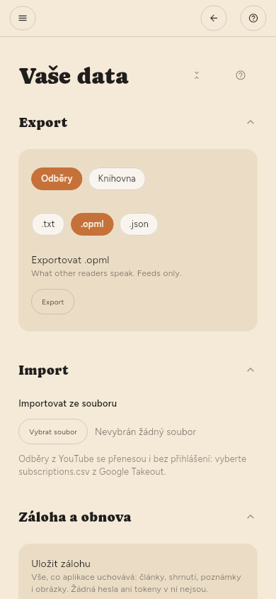

Kde jsou data uložena
Vaše knihovna je jeden soubor SQLite v datovém adresáři aplikace. Záloha tohoto souboru zálohuje vše: články, shrnutí, zvýraznění a to, co jste přečetli. Nastavení › Pokročilé › Vaše data › Záloha a obnova vytvoří stejnou kopii jako jeden soubor, bez hledání adresáře.
